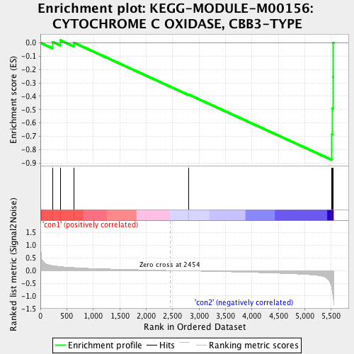
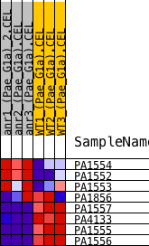
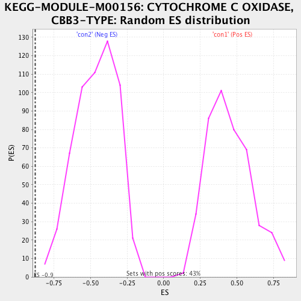

| | | Dataset | Anr_gene.AnrvsWT.cls#con1_versus_con2 |
| Phenotype | AnrvsWT.cls#con1_versus_con2 |
| Upregulated in class | con2 |
| GeneSet | KEGG-MODULE-M00156: CYTOCHROME C OXIDASE, CBB3-TYPE |
| Enrichment Score (ES) | -0.8767846 |
| Normalized Enrichment Score (NES) | -1.9081116 |
| Nominal p-value | 0.0 |
| FDR q-value | 0.0072396845 |
| FWER p-Value | 0.05 |
Table: GSEA Results Summary

Fig 1: Enrichment plot: KEGG-MODULE-M00156: CYTOCHROME C OXIDASE, CBB3-TYPE
Profile of the Running ES Score & Positions of GeneSet Members on the Rank Ordered List
| PROBE | DESCRIPTION
(from dataset) | GENE SYMBOL | GENE_TITLE | RANK IN GENE LIST | RANK METRIC SCORE | RUNNING ES | CORE ENRICHMENT | | 1 | PA1554 | na | | | 227 | 0.193 | 0.0069 | No |
| 2 | PA1552 | na | | | 375 | 0.155 | 0.0187 | No |
| 3 | PA1553 | na | | | 633 | 0.114 | 0.0006 | No |
| 4 | PA1856 | na | | | 2801 | -0.015 | -0.3868 | No |
| 5 | PA1557 | na | | | 5517 | -0.771 | -0.6858 | Yes |
| 6 | PA4133 | na | | | 5522 | -0.792 | -0.4903 | Yes |
| 7 | PA1555 | na | | | 5532 | -0.950 | -0.2566 | Yes |
| 8 | PA1556 | na | | | 5539 | -1.047 | 0.0016 | Yes |
Table: GSEA details [plain text format]

Fig 2: KEGG-MODULE-M00156: CYTOCHROME C OXIDASE, CBB3-TYPE
Blue-Pink O' Gram in the Space of the Analyzed GeneSet

Fig 3: KEGG-MODULE-M00156: CYTOCHROME C OXIDASE, CBB3-TYPE: Random ES distribution
Gene set null distribution of ES for KEGG-MODULE-M00156: CYTOCHROME C OXIDASE, CBB3-TYPE